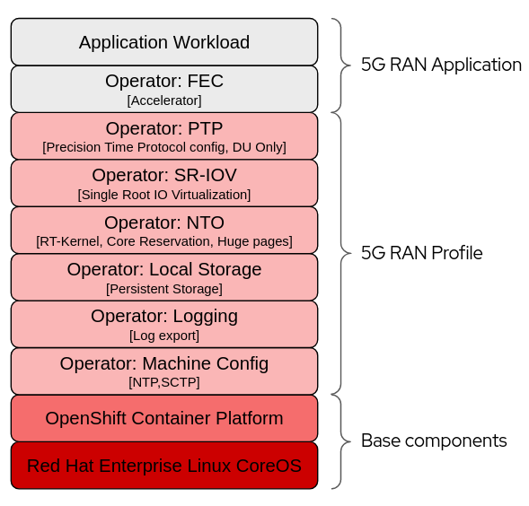

PolicyGen DeepDive
As we saw in an earlier section of the lab, we can leverage RHACM policies to get our clusters configured the way we want. We also introduced the Policy Generator component which helps us to create a set of policies based on pre-baked templates (source-crs) crafted by the Red Hat CNF team.
In this section, we are going to get into the implementation details of the Policy Generator plugin.
| In Red Hat OpenShift 4.16 a new templating mechanism called Red Hat Advanced Cluster Management for Kubernetes (RHACM) Policy Generator was released to eventually replace Policy Generator Template (PGT) as the standard way to generate Red Hat Advanced Cluster Management for Kubernetes policies. Currently, both mechanisms can be used in GitOps ZTP to generate RHACM policies for managed clusters. However, using RHACM and PolicyGenerator CRs is the recommended approach for managing policies and deploying them to managed clusters. This replaces the use of PolicyGenTemplate CRs for this purpose which will be deprecated in an upcoming OpenShift Container Platform release. More information about the differences between them can be found in this blog. |
PolicyGen Implementation
The PolicyGen is implemented as a Kustomize generator plugin called policygenerator. This allows for any Kustomize configuration (e.g. patches, common labels) to be applied to the generated policies. This also means that the policy generator can be integrated into existing GitOps processes that support Kustomize, such as RHACM Application Lifecycle Management and OpenShift GitOps (i.e. ArgoCD).
The policygenerator plugin reads the PolicyGenerator manifests and generates the required Kubernetes manifest to configure an RHACM Policy targeting a set of clusters. Code is located in the policy-generator-plugin Git repository.
Kustomize Plugins
As we already said, PolicyGen is a Kustomize plugin. Kustomize plugins work as described below.
| When installing these tools in ArgoCD running on a hub cluster the configuration described in this section is handled automatically. The ArgoCD operator will find the plugin binaries and use them to generate CRs from PolicyGenerator manifests. This section is provided as background/reference. |
The user has a path configured in Kustomize for plugins (defaults to ~/.config/kustomize/plugin/), inside this path different folders are configured in a way that Kustomize can understand what plugin needs to be executed under which situation. Let’s explain this.
If we look at this kustomization.yaml:
apiVersion: kustomize.config.k8s.io/v1beta1
kind: Kustomization
generators:
- common-policies/common.yamlWe see that under generators section we have a yaml file, generators tell Kustomize that some plugin needs to be run to interpret these files. The way Kustomize knows which plugin needs to be executed is by looking at the GroupVersionKind (GVK) of the files. Following with above example we will see the following GVK:
common-policies/common.yaml
apiVersion: policy.open-cluster-management.io/v1
kind: PolicyGeneratorAs we can see the group is policy.open-cluster-management.io, version is v1 and kind is PolicyGenerator.
Earlier, we talked about the Kustomzie plugins path, and how it is required to have a proper folder structure so Kustomize knows which plugin needs to be executed. Using the example above we can explain what Kustomize will do for generating this file.
common-policies/common.yaml
Kustomize will get the GVK and after that will go to the plugins path and execute the plugin binary, the path for the binary is $KUSTOMIZE_PLUGINS_PATH/<group>/<version>/<kind>/<pluginbinary>. In this case Kustomize will execute the binary at ~/.config/kustomize/plugin/policy.open-cluster-management.io/v1/policygenerator.
Policy Generator
The policygenerator plugin reads the PolicyGenerator manifests and uses the information provided in these files to output a set of RHACM policies that will be used for different purposes, from day2ops to monitoring the cluster health. It makes use of templated policies that can be found here.
| A high level view of the installation and configuration workflow can be found in the previous section ZTP workflow. |
5G RAN Profile
The Red Hat CNF team has crafted specific configurations to improve the performance on clusters running RAN workloads. All the configurations described below are expected to be present in a cluster where RAN workloads are expected to run.
| Some of these configurations are configured at install time (through the use of extra-manifests during the installation) and others are configured through Policy automatically after the cluster joins the RHACM Hub. |

Above picture describes what areas are covered by the 5G Ran profile. Red Hat covers all layers but the two on the top which are part of the application domain. Below the different 5G RAN profile configurations are described.
A more in-detail explanation of the 5G RAN Profile is covered in the Telco RAN DU reference design components.
Workload Partitioning
Pins OCP platform, operating system processes and day2 operator Pods that are part of the DU profile to the reserved cpuset.
Starting in OCP4.14+ this gets configured in the PerformanceProfile managed by the Node Tuning Operator.
Kubelet Tuning
Reduce frequency of kubelet housekeeping and eviction monitoring to reduce CPU usage.
SCTP
Enable SCTP kernel module which is required by RAN applications but disabled by default in RHCOS.
Container Mount Hiding
In order to reduce system mount scanning overhead, creates a mount namespaces for container mounts visible to kubelet/CRI-O.
Monitoring Operator Config
Reduce footprint of the monitoring stack by:
-
Reducing the Prometheus retention period, metrics are already being aggregated at the RHACM hub.
-
Disable local Grafana and Alertmanager.
Console Operator
As part of the composable OpenShift Settings the Console Operator can be enabled-disabled. The ClusterInstance CR allows to define these settings via the installConfigOverrides.
Since the DUs are being centrally managed from a RHACM hub, the local console will be disabled to reduce resource consumption.
OperatorHub
As part of the composable OpenShift Settings the OperatorHub can be enabled-disabled. A single catalog source is recommended that contains only the operators required for a RAN DU deployment.
PTP Operator
Configuration of the Precision Time Protocol. The DU can run in the following modes:
-
Ordinary clock sync to a GM or boundary clock.
-
In addition to the above optionally provide a boundary clock for RU.
This also includes an optional event notification service that applications can subscribe to for ptp events.
SR-IOV
Provision and configure the SR-IOV CNI and device plugin. Both netdevice (kernel VFs) and vfio (DPDK) are supported.
This will be customer specific.
It also enables the required SR-IOV kernel arguments intel_ionmu and iommu=pt at installation time avoiding unnecessary reboots when installing the operator:
Node Tuning Operator
Performance Tuning interface including:
-
Enables RT kernel.
-
Enables kubelet feature (cpu manager, topology manager, memory manager).
-
Configures huge pages.
-
Configures reserved and isolated cpusets.
-
Additional kernel args.
Local Storage
Enables creation of Persistent Volumes which can be consumed as PVCs by applications. This will be customer specific.
Log Collector and Forwarder
Enables collection and shipping of logs off the edge node for remote analysis.
Policies Templating
Policies templating is a bit different, we have a set of base configuration CRs, known as source-crs, that we can use. This set of CRs can be found here.
If you access this link you will see lots of files, like for example:
-
AcceleratorNS.yaml
-
AmqInstance.yaml
-
etc.
These CRs are referenced (by filename) from the PolicyGenerator CRs in Git. The POlicyGenerator CRs act as a manifest of which configuration CRs should be included and how they should be combined into Policy CRs. In addition, the PolicyGenerator can contain an "overlay" (or patch) that is applied to the CR before it is wrapped into the Policy.
The way this works is a follows. We will have one or more PolicyGenerators where we will reference these base configuration CRs. We can see an example here.
Let’s use the following PolicyGenTemplate as example.
apiVersion: policy.open-cluster-management.io/v1
kind: PolicyGenerator
metadata:
name: "test"
namespace: "test"
placementBindingDefaults:
name: test-placement-binding
policyDefaults:
namespace: ztp-policies
placement:
labelSelector:
group-du-sno: ""
logicalGroup: "active"
remediationAction: inform
severity: low
namespaceSelector:
exclude:
- kube-*
include:
- '*'
evaluationInterval:
compliant: 10m
noncompliant: 10s
policies:
- name: test-policy
policyAnnotations:
ran.openshift.io/ztp-deploy-wave: "10"
manifests:
- path: source-crs/reference-crs/SriovOperatorConfig-SetSelector.yaml
- path: source-crs/reference-crs/PerformanceProfile-SetSelector.yaml
patches:
spec:
cpu:
isolated: "2-19,22-39"
reserved: "0-1,20-21"
hugepages:
defaultHugepagesSize: 1G
pages:
- size: 1G
count: 32We can see that the PolicyGenerator is targeting two base configuration CRs: SriovOperatorConfig-SetSelector.yaml and PerformanceProfile-SetSelector.yaml.
The first source CR, SriovOperatorConfig-SetSelector.yaml, is not overriding any settings, we can tell this because we don’t have any patches section below the path. That means that the final policy will include the configuration CR without modification (base SriovOperatorConfig configuration CR).
The second source CR, PerformanceProfile-SetSelector.yaml, is overriding some parameters in the spec. That means that the final policy will be configured as a merge of the original CR plus the custom overrides we provided in the PolicyGenerator.
Policies Custom Templating
In the previous section we have seen how we can use pre-defined templates to craft our policies, sometimes we may need to configure things that do not have a specific template pre-defined. In such cases, we can create our own templates by creating the template files within the same repository. Complete information can be found in the docs.
Running Kustomize Plugins Locally
We have described how Argo CD makes use of the policygenerator plugin to generate the required manifests for our 5G RAN deployments. In this section, we are going to cover how to run this plugin locally which can be useful while troubleshooting or getting a preview of what the files will look like when generated via Argo CD.
By running the steps below we will get the plugin installed in our system. Kustomize should be already installed, you can get it from the releases page.
mkdir -p ~/.config/kustomize/plugin
mkdir -p ~/.config/kustomize/plugin/policy.open-cluster-management.io/v1/policygenerator
podman cp $(podman create --name policygentool --rm registry.redhat.io/rhacm2/multicluster-operators-subscription-rhel9:v2.15.0-1):/policy-generator/PolicyGenerator-not-fips-compliant ~/.config/kustomize/plugin/policy.open-cluster-management.io/v1/policygenerator/PolicyGenerator
podman rm -f policygentoolNow that we have the plugins locally we can run them:
We need to enable the alpha plugins by using the parameter --enable-alpha-plugins
|
kustomize build site-policies/ --enable-alpha-pluginsWe will get the output (manifests that will be consumed by the RHACM Hub).
apiVersion: v1
kind: Namespace
metadata:
labels:
name: ztp-policies
name: ztp-policies
---
<OUTPUT_OMITTED>